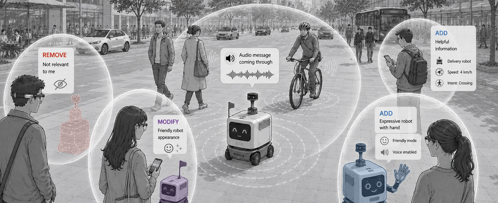
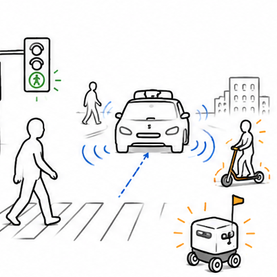
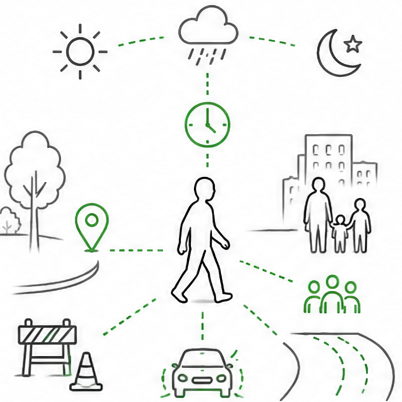
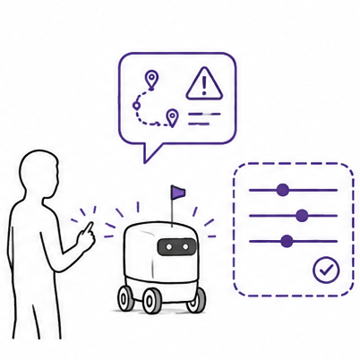
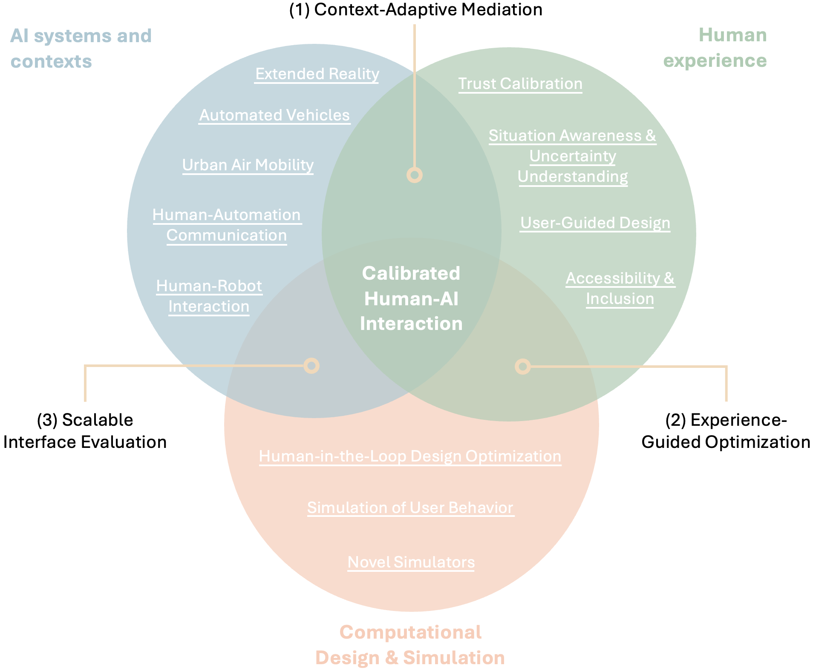

I work toward the vision of Experience-Aligned Mediated Reality.
In mediated environments, adaptive interfaces can align people’s experience of technology with their needs, abilities, and preferences by adding, removing, or modifying perceptual information as it reaches the user.

To realise this vision, user interfaces should follow three core principles:

Legibility
Users can understand what matters, what is uncertain, and why information is filtered, revealed, or clarified.

Contextuality
Mediation adapts to the user’s abilities and goals, the task, the environment, the system state, and the social context.

Contestability
Users can inspect, correct, and shape adaptive behaviour when mediation affects what they perceive, trust, or decide.
I develop this vision through empirical and technical research across three areas: mediated interaction with emerging technologies, human experience alignment, and computational design and simulation. Together, these areas connect (1) where mediation is needed, (2) what human outcomes it should support, and (3) how adaptive interfaces can be designed and tested at scale.

Featured Work
Legibility Making automated vehicle perception visible and interpretable through real-time mediated reality.